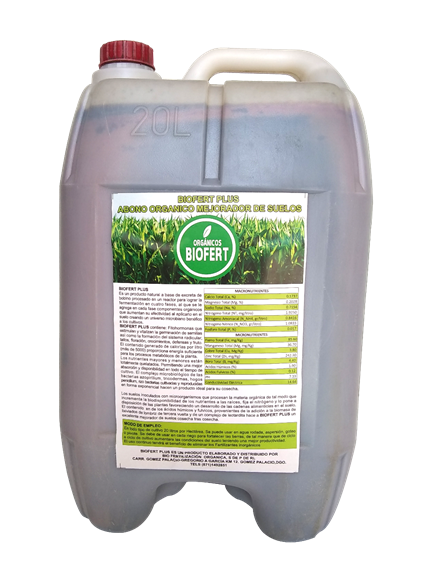

Biofert Plus

Biofert Plus. Es un producto natural a base de excreta de Bovino procesado en un reactor para lograr fermentación en cuatro dases,
al que se le agrega en cada fase componentes orgánicos que aumentan su efectividad al aplicarlo en el suelo creando un Universo
microbiano benéfico al los cultivos.
Biofer Plis Contiene: Fitohormonas que estimulan y vitalizan la germinación de semillas así como la formación del sistema radicular
y tallos, floración, crecimientos, defensas y fruto.